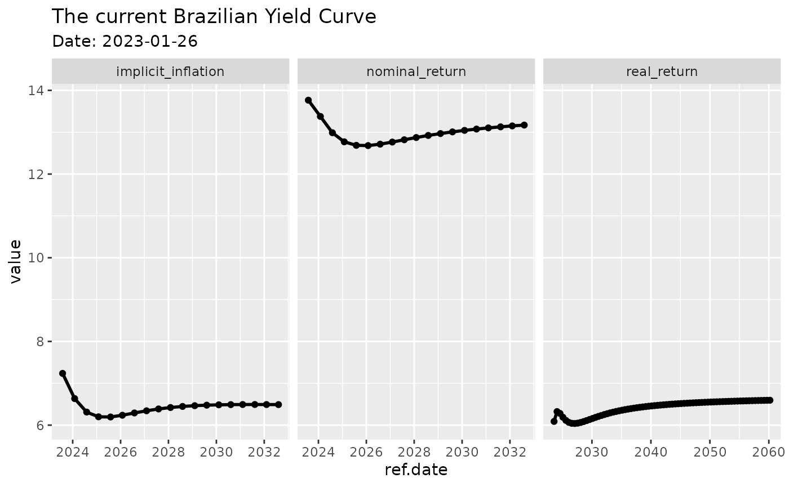

Downloading the Current Yield Curve
Marcelo Perlin
2023-01-24
Source:vignettes/gtdd-vignette_YieldCurve.Rmd
gtdd-vignette_YieldCurve.RmdThe latest version of GetTDData offers function
get.yield.curve to download the current Brazilian yield
curve directly from Anbima. The yield curve is a tool of financial
analysts that show, based on current prices of fixed income instruments,
how the market perceives the future real, nominal and inflation returns.
You can find more details regarding the use and definition of a yield
curve in [Investopedia][https://www.investopedia.com/terms/y/yieldcurve.asp].
Usage
library(GetTDData)
df.yield <- get.yield.curve()
str(df.yield)## 'data.frame': 112 obs. of 5 variables:
## $ n.biz.days : num 126 252 378 504 630 ...
## $ type : chr "real_return" "real_return" "real_return" "real_return" ...
## $ value : num 6.32 6.41 6.31 6.2 6.12 ...
## $ ref.date : Date, format: "2023-07-26" "2024-01-26" ...
## $ current.date: Date, format: "2023-01-23" "2023-01-23" ...And we can plot it for the derised result:
library(ggplot2)
p <- ggplot(df.yield, aes(x=ref.date, y = value) ) +
geom_line(size=1) + geom_point() + facet_grid(~type, scales = 'free') +
labs(title = paste0('The current Brazilian Yield Curve '),
subtitle = paste0('Date: ', df.yield$current.date[1])) ## Warning: Using `size` aesthetic for lines was deprecated in ggplot2 3.4.0.
## ℹ Please use `linewidth` instead.
print(p)